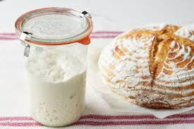
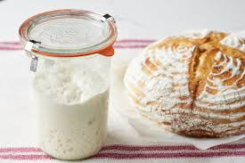

Sourdough is a type of bread leavened naturally by a fermented culture of wild yeast and bacteria.
Getting into sourdough as a beginner can be intimidating, however, if you make it once, I promise you'll be hooked!
Author's Note
My interest in sourdough started to grow after watching videos of people on instagram making their loaves with all different types of inclusions. Fig jam and hot honey, Cheddar-Jalepeno, and Caprese flavored loaves had my mouth watering and eager to make my own invention. My cousin had a starter, so she had me over for the weekend and showed me how to make my own loaf. For weeks I put off making it on my own, because I didn't want to mess it up. Once I got over my inital fear, baking sourdough wasn't just a hobby, but a weekly science experiment. I love watching the starter grow and the bread rise, and how different flavor combinations work together. I promise you that once you enter the world of sourdough, you'll discover a better way of living.
Let's get baking!
This recipe is best started at about 8pm so that you can bake around 3pm the next day. (Your starter needs to be ready at 8pm) 5pm would be 12pm the next day. 2pm would be 9am the next day. Keep in mind about 12 hours after you start, you need to shape the dough.
- 375g water
- 100g sourdough starter
- 11g salt (Sea salt is best)
- 500g bread flour
- Add 375g warm water to bowl.
- Add 50-100g starter.
- 50g if it's warm in the house. 100g if it's cold in the house. I typically use 100g because my home is cold, but 75g is a safe measurement.
- The more you use the faster the dough will rise.
- Also, I always test that the starter floats before starting the recipe (but test in cold water).
- Stir water and starter together.
- Add 11g salt.
- Add 500g bread flour.
- Stir until it becomes a ball.
- Cover with a damp towel and let rise for 30 minutes.
- After 30 minutes stretch and fold the dough 4 times.
- Repeat this step every 30 minutes for 2 hours.
- Cover with towel and let sit for 8-10 hours at room temperature.
- Place dough on a floured surface and shape the dough into a round.
- If you want to add inclusions, you can add them when folding each layer before shaping the round.
- Let rest seam side up for 30 minutes.
- Place in a toweled bowl and cover. Put in fridge for 1 hour to 48 hours. I typically leave in fridge for about 6-7 hours.
- When about to bake, preheat oven to 550.
- Once preheated, place dough on parchment paper seam side down. Score bread.
- Lower oven to 450 and place bread in dutch oven covered and bake for 30 minutes.
- If you do not own a dutch oven, place a pan of water in the oven while it's preheating. Keep the water pan in the oven and bake the sourdough on a flat sheet.
- After 30 minutes, lower to 400 and remove lid and bake for another 10-15 minutes or until golden brown.
- Cool on a wire rack for about 1 hour.

 
